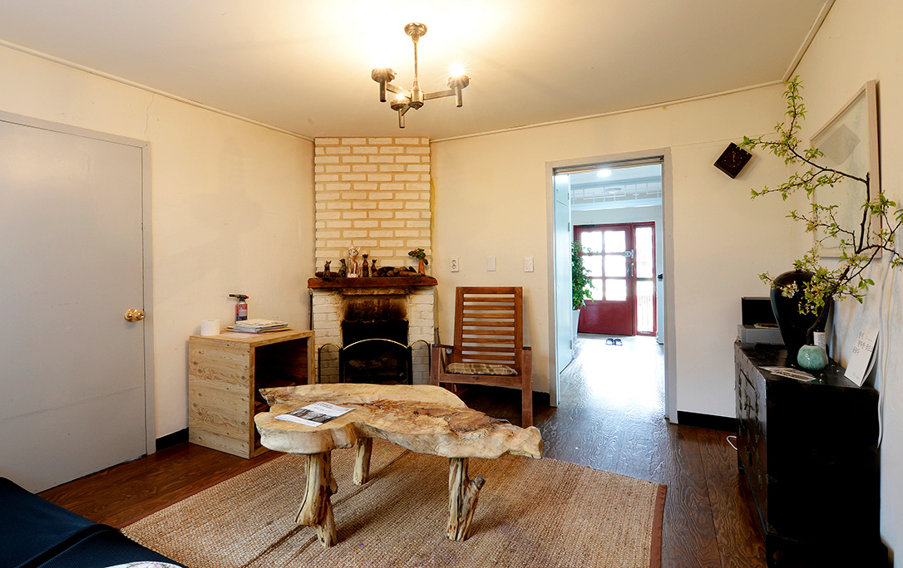
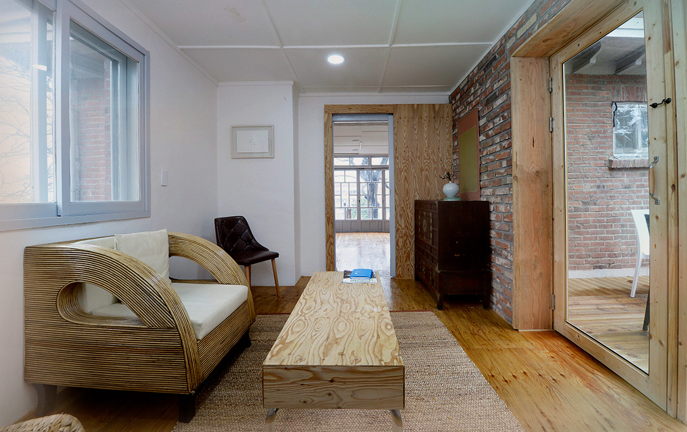
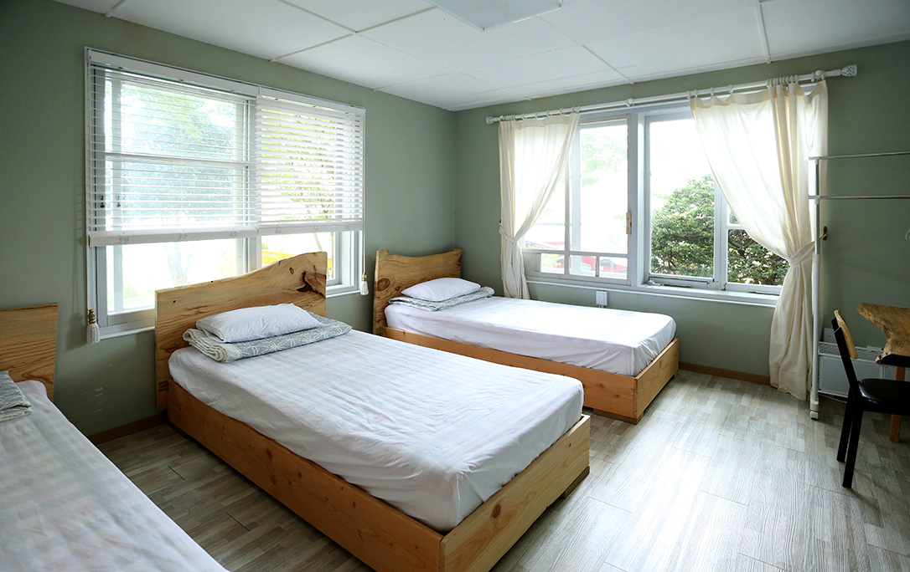
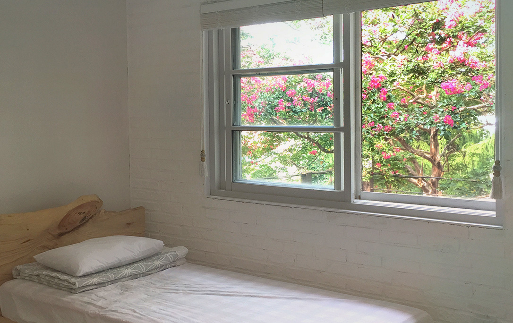
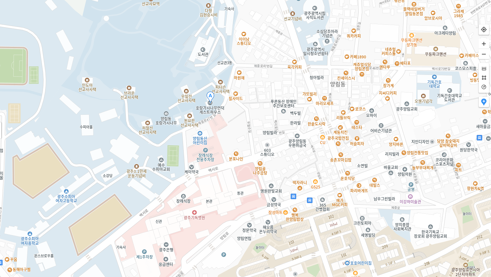

호랑가시나무 언덕
자연을 초대한 게스트 하우스
힐링 자연 휴식 예술 역사
그 모든 것을 느끼는 곳, 객실소개
-  서서평방(VIP) 조용하고 아늑한 분위기를 원하시는 게스트들을 위한 곳이며 채광이 넓어 많은 햇빛이 들어오고 멀리 무등산이 보입니다
-  유수마방(VIP) 2층 맞은 편 서서평 방보다 조금 더 넓은 방입니다. 직접만든 옷걸이와 아름다운 수납장이 있으며, 거울 등이 마련되어 있습니다.
-  서로득방 파스텔풍의 녹새 벽지와 넓은 창을 가지고 있는 방입니다. 햇볕이 잘 들어 따뜻한 분위기를 가지고 있으며, 멀리 무등산이 보입니다.
-  배유지방 같은 2인실 우월순 방보다 더 넓습니다. 옷걸이가 붙장이식이라 공간이 더욱 넓습니다. 바로 맞은 편에 화장실이 위치하고 있어 편리합니다.
찾아오시는 길

지하철 이용시
남광주역 3번 출구 → 게스트하우스 (도보 25분)
문화전당역 1, 3번 출구 → 게스트하우스 (도보 35분)
시내버스 이용시
기독병원 정류장 (도보 10분)
버스노선 : 금남55
기독병원 정류장 (도보 30분)
버스노선 : 순환01, 진원17, 지원25, 봉선27, 문흥48, 금남59, 봉선76, 첨단95, 송정98, 화순217, 화순218, 화순218-1